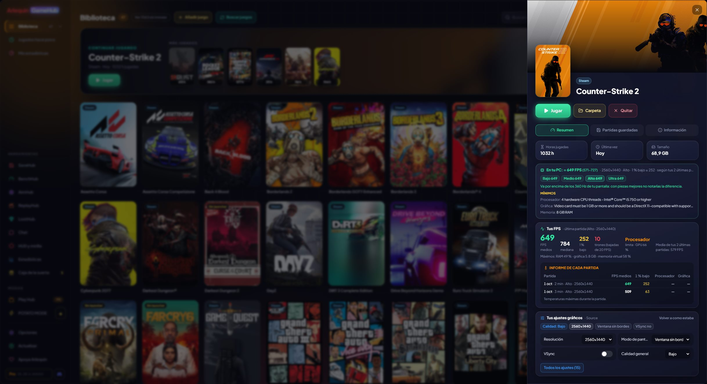

게임별 페이지
게임에 대한 모든 것을 한 패널에: 내 PC에서의 실행 여부, 내 FPS, 내 설정, 내 세이브.
게임을 클릭하면 네 개의 탭으로 구성된 페이지가 열립니다: 개요(플레이 시간, 마지막 플레이 시점, 차지하는 용량, 요구 사양, 내 FPS), 그래픽 설정(실행 옵션 포함), 세이브 파일, 정보(도전 과제, 설명, 스토어, 개발사, 출시일, 설치 위치, 세이브 위치).
내 PC에서 돌아갈까? GameHub는 내 CPU, 그래픽 카드, 메모리를 알고 있으며, Steam 스토어의 각 게임 최소 및 권장 사양과 비교합니다. 신호등으로 표시됩니다: 초록은 여유 있게 실행, 노랑은 최소 사양 충족, 빨강은 부족. 라이브러리에서 필터로 여유 있게 실행되는 게임, 실행되는 게임, 안 되는 게임만 볼 수 있습니다.
또한 몇 FPS가 나올지도 범위(“≈ 75 FPS (65-85)”)와 품질별(낮음, 중간, 높음, 울트라)로 알려 줍니다. 이미 플레이했다면 내 실제 FPS가 먼저 표시되고(현재 GPU와 CPU의 값만), 그렇지 않으면 커뮤니티 세션(내 세션을 공유하거나 ArlequinPro가 있는 경우) 또는 대략적으로 Steam 요구 사양으로 계산합니다.
무엇이 성능을 제한하고 무엇을 업그레이드할 만할까? GameHub는 그래픽 카드가 낼 수 있는 성능과 CPU가 감당할 수 있는 성능을 따로 계산해 명확하게 알려 줍니다: “GPU가 한계입니다: 더 좋은 CPU로는 FPS가 거의 오르지 않습니다”, 반대의 경우, 또는 둘의 균형이 맞아서 둘 다 업그레이드해야 한다는 내용입니다.
또한 게임의 세이브 파일(세이브, 설정 등)이 묶여 있고, 백업과 폴더 열기 및 설치 버튼도 있습니다.
FPS 예상치는 신뢰할 수 있습니다. 프레임 생성이 켜진 세션은 포함되지 않으며, 어떤 설정(업스케일링과 레이 트레이싱)을 가정했는지도 알려 줍니다.
사용 방법
- 라이브러리에서 아무 게임이나 클릭하고 위쪽의 탭을 전환하세요.
- 라이브러리 상단 바의 “내 PC에서” 필터.
